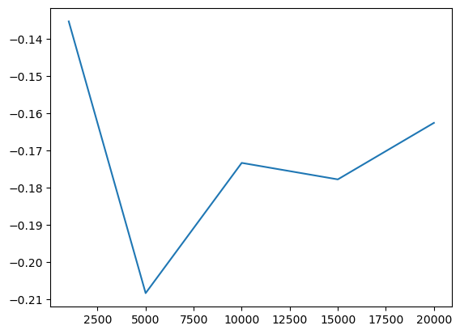
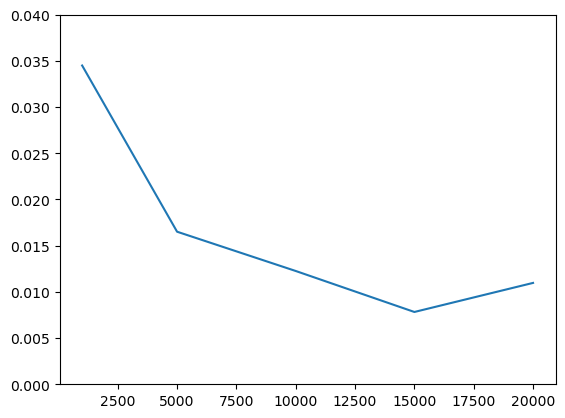

σ = 0.05; γ = 40
from math import exp
import numpy as np
from numpy.random import normal
from matplotlib import pyplot as plt
U = lambda x: (x**(1-γ))/(1-γ)
V = lambda e: U(exp(e))def E_ϵ(f, N=100):
"""Compute expectation with Monte-Carlo
- f function to integrate
- N number of draws
"""
gen = (f(normal()*σ) for e in range(N)) # generator
return sum(gen)/NE_ϵ(V)-0.2352959986986697
NVec = [1000, 5000, 10000, 15000, 20000]
vals = [E_ϵ(V, N=i) for i in NVec]--------------------------------------------------------------------------- NameError Traceback (most recent call last) Cell In[1], line 2 1 NVec = [1000, 5000, 10000, 15000, 20000] ----> 2 vals = [E_ϵ(V, N=i) for i in NVec] NameError: name 'E_ε' is not defined
from matplotlib import pyplot as pltplt.plot(NVec, vals)
E_ϵ(V, N=100)-0.23931320113541413def stdev(f, N=100, K=100):
gen = (E_ε(f,N=N) for k in range(K))
return np.std([*gen])
sdvals = [stdev(V, N=n, K=100) for n in NVec] plt.plot(NVec, sdvals)
plt.ylim(0,0.04)
from numpy import polynomial
from math import sqrt,pix, w = polynomial.hermite_e.hermegauss(8)
x = x*σ # renormalize nodes
s = sum(
w_*V(x_) for (x_,w_) in zip(x,w)
)/sqrt(pi)/sqrt(2)
# print(s)snp.float64(-0.17164225728611746)vals[-0.13538898980999853,
-0.20839116713876957,
-0.17339702998832132,
-0.1778291540323804,
-0.16264381208690154]x, w = polynomial.hermite_e.hermegauss(20)xarray([-7.61904854, -6.51059016, -5.57873881, -4.73458133, -3.94396735,
-3.18901482, -2.45866361, -1.74524732, -1.04294535, -0.34696416,
0.34696416, 1.04294535, 1.74524732, 2.45866361, 3.18901482,
3.94396735, 4.73458133, 5.57873881, 6.51059016, 7.61904854])